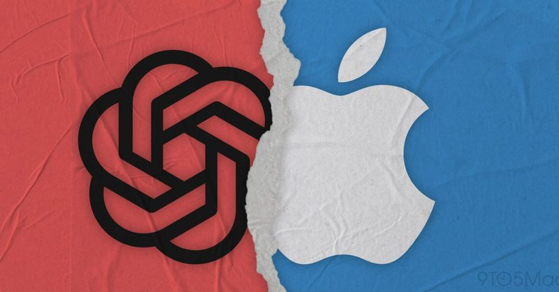

本期重點：OpenAI 對 Apple 提出反訴，指控竊取硬體機密並施壓共用供應商；SAP 傳將為 AI 轉型裁撤至少 1 萬個職位。另有日本 AI 法修法整理案、英國法院 AI 假判例調查、上海資料中心出現受管制的 Nvidia 晶片、中國新模型傳延後、加拿大擴大 AI 算力補助，以及外資 11 月賣超台股創紀錄。美國感恩節連假期間新聞較少。

圖：9to5Mac新聞#1
OpenAI 反告 Apple 竊取機密、施壓供應商
OpenAI 與旗下硬體公司 io 於 11 月 27 日（美國時間）在加州聯邦法院對 Apple 提出反訴，指控一名從 OpenAI 回鍋 Apple 的前員工，把未發表硬體的機密資料傳到個人帳號，並指 Apple「脅迫與威脅」同時替兩家生產的供應商，不讓它們支援 OpenAI 的裝置。這是對 Apple 7 月控告 OpenAI 挖角竊密的反擊，Apple 原案預定 2027 年 7 月 19 日開審。
💡 跟你有什麼關係：OpenAI 正在開發自家 AI 隨身裝置，供應鏈和 iPhone 多有重疊；這場官司可能影響這類新裝置能否順利找到代工、何時上市。
日本內閣府 AI 制度工作小組 11 月 27 日提出修法整理案：提供高性能、且在日本有一定使用規模 AI 服務的業者，須採取安全措施，發生網路攻擊、生化核爆風險或 AI 非預期行為造成的重大事故時，要向政府報告。政府可要求報告、勸告與命令，業者不配合將有罰則，技術調查由 AI 安全研究所（AISI）負責。
💡 跟你有什麼關係：在日本用戶多的大型 AI 服務都可能被納入，這是歐盟之後又一個對大型 AI 業者設強制通報義務的例子，台灣未來立法可能參考。
英國調查新聞局（TBIJ）11 月 26 日與《衛報》合作發布分析，從英格蘭與威爾斯公開判決中找到數十件涉及 AI 的案件，其中超過 20 件被法官認定用 AI 引用了不存在的判例。也有證人用聊天機器人寫證詞、一名警員用 Microsoft Copilot 撰寫被害人陳述，還有當事人反指對方的真實證據是 AI 偽造。
💡 跟你有什麼關係：用 AI 寫正式文件很方便，但它可能編出不存在的條文或判例，送出前要逐條查證；另一方面，「這是 AI 做的假證據」也開始被拿來否認真實內容。